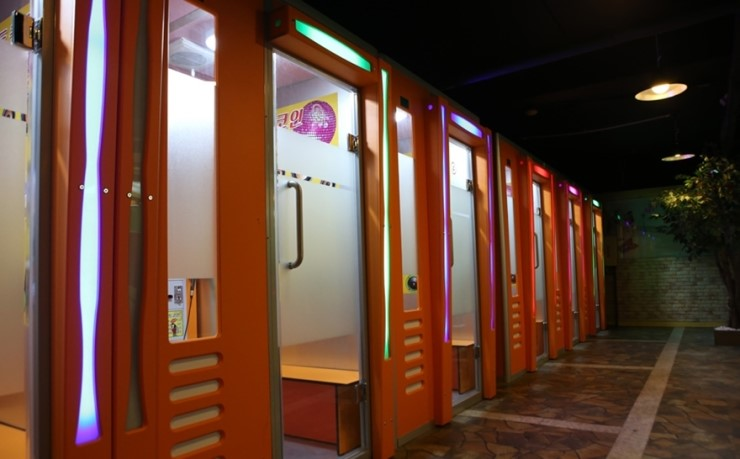
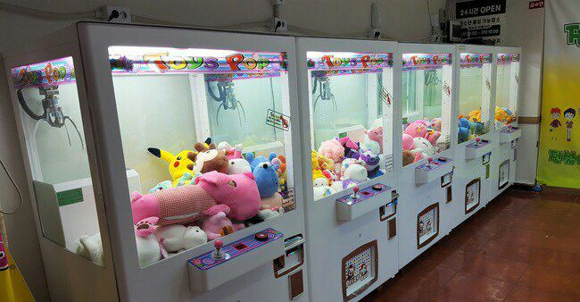
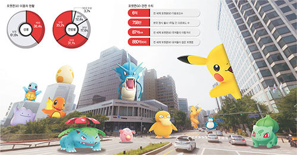

전안법 전기용품안전관리법이란
전기용품의 생산과 조립 가공 판매및 사용에
있어서 안전관리에 관한 사항을 규정함으로써
화재 감전등의 위험및 장해의 발생을
방지하기위해 제정한법
1974.1.4법률제2674호
문제의 발단
전기용품과 의류 잡화같은 생활용품에 따로 적용되던 법을 하나로 통합하는데서 발생.
전기용품과 유아용품을 만들거나 수입하는 업체의 경우 제품의 안전기준적합여부를
확인받았는데 그것이 kc인증서였습니다.
의류등의 생활용품업체는 품질안전검사등을 받기는 했지만 kc인증서를 갖고있어야할
이유가 없었는데 이제 생활용품도 전기용품과같이 같은 법을 적용하므로써
kc인증표시가 반드시 필요해졌습니다.
문제는 이 법은 국내에서 제조하는 제조업자와 판매하는 판매업자 모두에게 적용되어
국내판매자만 역차별받는다는 이유로 문제가 발생한 것입니다.
자체적인 안전검사장비를 갖추지 못한 영세업자들은 외부기관에 인증을 맡겨야하는데
이 비용이 만만치 않다는 것입니다.
전안법에서는 kc인증을 표시하지 않았거나 kc인증을 안받은 전기용품 생활용품은
제조, 수입, 판매, 구매대행, 판매중계를 할 수 없도록 하고있어 대부분의
인터넷쇼핑몰 소셜커머스등이이 대상에 속한다고 할 수 있습니다.
[출처] 전안법 전기용품안전관리법 kc인증 알아볼까요?|작성자 대성인쇄67칠보통신원
다시 정리하면, KC인증(국가통합인증)을 받지 않았거나 KC인증표시를 하지 않은 전기용품 및 생활용품은
제조, 수입, 판매, 구매대행, 판매중개를 할 수 없게 되는 것을 말합니다.
유아복이나 전기 공산품에만 국한돼 있던 KC인증 대상이
의류, 잡화 등 신체에 직접 접촉하는 대부분의 용품으로 확대됩니다.
오픈마켓, 소셜커머스, 종합몰 등 국내 인터넷 쇼핑 사이트 대부분이 규제 대상이며,
중고거래, 구매대행 등 대다수 거래 행위도 전안법 적용을 받습니다.
위반하면 적발 횟수와 기업 규모에 따라 30만~500만원의 과태료를 내야 합니다.
미니멀 플레이
혼놀족 "혼자 놀기+족"을 위한 간편하고 편안하게 접하는 놀이.
혼밥, 혼술을 넘어 혼자 즐기는 문화까지 확산되었고,
혼놀족을 겨냥한 신규 창업아이템이 인기가 있어졌습니다.

적은 돈으로 충분한 코인 노래방.(경제적 가격에 스트레스 해소 가능)

모든 기계가 인형 뽑기 기계뿐인 인형 뽑기 방.(대도시 유흥가 점령한 소소한 취미생활)

역세권+포켓몬을 합친 신조어"포세권"(포세권 지역 주요 매장 매출 급등) 포세권이란,
'포켓스톱'과 '역세권'의 합성어로, 모바일 증강 현실(AR) 게임 '포켓몬고'의 캐릭터가 자주 등장하는 명당이라는 뜻. ([출처] NAVER 국어사전)
[출처] "미니멀플레이"|작성자 용인솔새
줄폐업
'줄폐업'에 관해서 논란이 있었습니다. 그에 관련된 기사를 가져왔습니다.
줄서던 대왕 카스텔라 줄폐업
종편 고발 프로그램 후 직격탄
홍대 인근 10여곳 중 3, 4곳 유지
남은 집도 “손님 끊겨” 전업 고심
기본적으로 몇 십 분씩 줄을 서야 먹을 수 있었던 대박 상품의 영광은 옛말이 됐다.
매장마다 긴 줄이 이어지던 ‘대왕 카스텔라’ 가게에 거짓말처럼 손님이 뚝 끊기고,
가게 주인은 이제 전업과 폐업을 고민하고 있다.
‘식용유 범벅’이라는 고발 프로그램 방영 이후 벌어진 일이다.
5일 오후 홍익대 인근에서 가장 유명하다던 카스텔라 가게에는 한 시간이 넘도록
고작 3명의 손님만이 찾아왔다.
불과 두어 달 전만 해도 문전성시를 이루던 가게다.
10㎡ 남짓한 가게를 지키던 점주 이갑선(47)씨는 “당장 하루 매출이 120만~180만원에서
20만~50만원으로 줄었다”면서도 “그나마 유동인구가 많은 곳이라 다른 가게에 비하면
나은 편”이라고 씁쓸해했다. 서울 종로구에 위치한 한 가게는 “한 판에 6,000원짜리
카스텔라가 10개 나오는데, 하루에 12판씩 팔다가 요즘은 2판도 다 못 팔 때가 많다”고
푸념했다.
이들 가게의 매출은 카스텔라에 식용유가 과다하게 들어간다는 것을 꼬집은 내용의
한 종합편성채널 프로그램이 전파를 타면서 급전직하했다.
방송 직후 전문가들이 “제빵에 식용유가 쓰이는 건 이상한 게 아닌데도 방송이 과장하고
있다”고 비판했으나, 이미 돌아선 여론을 되돌릴 수 없었다.
실제 카스텔라 가게가 10여 군데 있었던 홍익대ㆍ연남동 지역엔 가게를 그대로
유지하고 있는 곳이 3, 4곳에 불과했다. 지난해 12월만 해도 ‘줄을 서서 먹었다’던
서울 마포구 창전동의 한 가게는 확인 결과 이미 사라졌다. 인근 부동산 중개업자는
“방송 나가고 이틀 뒤에 문을 닫았다”고 귀띔했다. 개업한 지 3개월 남짓 된 마포구
상수동의 한 가게는 아예 휴업 상태다.
불도 켜지 않은 가게 안에 앉아있던 점주 양재영(46)씨는
“방송 이후 손님이 뚝 끊겨 거의 문을 닫은 상태”라며
“부동산에 가게를 내놓았지만 우리 같은 영세업자에겐 업종 전환도 만만치 않다”고
한숨을 쉬었다.
그나마 장사를 하는 곳도 ‘버티고 있을 뿐’이라고 한숨이다.
마포구 서교동에 위치한 한 매장은 “문을 닫지는 않았지만 원래 없던 메뉴인
치즈케이크로만 가게를 홍보하고 있다”고 말했다. 연남동의 한 가게는 ‘대왕’이라는
상호에 맞지 않게 카스텔라를 작게 잘라 종이컵에 담아 싸게 파는 등 자구책을 마련하고 있다.
반짝 인기 후 사라진 수많은 먹거리처럼 대왕 카스텔라의 몰락 또한 사실상 시간 문제였다는 분석도 나온다.
그러나 이번엔 방송이라는 결정적 타격이 있었던 만큼 “모은 돈 다 털어 창업했다”는
대부분의 40, 50대 영세업자들은 속수무책 당할 수밖에 없었다.
김민정 숙명여대 소비자경제학과 교수는 “특히 먹거리의 유행은 언론 매체에 굉장히
민감하게 반응하기 때문에 영세업자들이 휩쓸릴 수밖에 없는 구조”라고 설명했다.